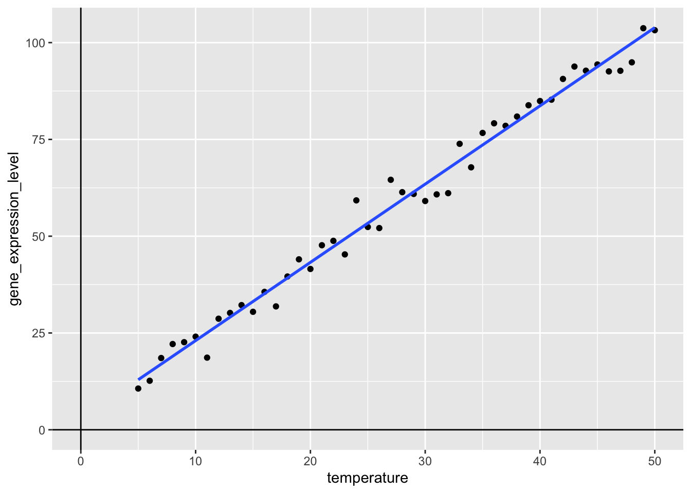

Primer on Linear Models in R
In a basic linear regression model, one independent variable and one dependent variable are involved. The terms independent and dependent are literal meaning, that one variable does depend on the value of the other, whereas for the other the value is independent of the other. In a basic linear regression, we find the line that best fit the data. We will illustrate this, with the following example.
Example
Background
Let’s say we wanted to study the genetic mechanism protecting a plant from heat shock, then:
- Independent: Environmental Condition (temperature)
- Dependent: Gene Expression Level (related to heat shock protection)
Here, the independent variable is the temperature and the dependent variable is the gene expression level. It is clear, that the temperature, does not rely on the gene expression level, but the gene expression level of heat shock related genes, does rely on the temperature.
So, we keep plants under different temperatures and collect samples, from which we can extract RNA and run a transcriptomics analysis uncovering gene expression levels.
Data
For the data here, we are going to simulate the relationship between gene expression levels and temperature, as a function in R:
run_simulation <- function(temp){
measurement_error <- rnorm(n = length(temp), mean = 0, sd = 3)
gene_expression_level <- 2 * temp + 3 + measurement_error
return( gene_expression_level )
}Note, how we’re adding some measurement error to our simulation, otherwise we would get a perfect relationship, which we all know never happens.
Now, we can easily run simulations:
run_simulation(temp = c(15, 20, 25, 30, 35))[1] 34.80057 43.96642 53.15623 65.65284 73.43373Let’s just go ahead and create some data, we can work with. For this example, we take samples starting at 5 degree celsius and then in increments of 1 up to 50 degrees:
set.seed(806017)
experiment_data <- tibble(
temperature = seq(from = 5, to = 50, by = 1),
gene_expression_level = run_simulation(temp = temperature)
)
experiment_data |>
sample_n(10) |>
arrange(temperature)# A tibble: 10 × 2
temperature gene_expression_level
<dbl> <dbl>
1 12 28.7
2 13 30.2
3 16 35.6
4 19 44.0
5 22 48.8
6 27 64.6
7 32 61.1
8 33 73.9
9 35 76.7
10 40 84.9Visualising
Now, that we have the data, we can visualise the relationship between the temperature- and gene_expression_level-variables:
my_viz <- experiment_data |>
ggplot(aes(x = temperature,
y = gene_expression_level)) +
geom_point() +
geom_vline(xintercept = 0) +
geom_hline(yintercept = 0)
my_viz
Now, we can easily add the best fit line using the geom_smooth()-function, where we specify that we want to use method = "lm" and for now, we exclude the confidence interval, by setting se = FALSE:
my_viz +
geom_smooth(method = "lm",
se = FALSE)
What happens here, is that a best-fit line is added to the plot by calculating the line, such that the sum of the squared errors is as small as possible, where the error is the distance from the line to a given point. This is a basic linear regression and is known as Ordinary Least Squares (OLS). But what if we want to work with this regression model, beyond just adding a line to a plot?
Modelling
One of the super powers of R is the build in capability to do modelling. Because we simulated the data (see above), we know that the true intercept is 3 and the true slope of the temperature variable is 2. Let see what we get, if we run a linear model:
my_lm_mdl <- lm(formula = gene_expression_level ~ temperature,
data = experiment_data)
my_lm_mdl
Call:
lm(formula = gene_expression_level ~ temperature, data = experiment_data)
Coefficients:
(Intercept) temperature
2.816 2.021 Important, the formula notation gene_expression_level ~ temperature is central to R and should be read as: “gene_expression_level modelled as a function of temperature”, i.e. gene_expression_level is the dependent variable often denoted y and temperature is the independendt variable often denoted x.
Okay that’s pretty close! Recall the reason for the difference is, that we are adding measurement error, when we run the simulation (see above).
In other words our model says, that:
\[gene\_expression\_level = 2.816 + 2.021 \cdot temperature\]
I.e. the estimate of the intercept is 2.816 and the estimate of the slope is 2.021, meaning that when the temperature = 0, we estimate that the gene_expression_level is 2.816 and for each 1 degree increase in temperature, we estimate, that the increase in gene_expression_level is 2.021.
These estimates are pretty close to the true model underlying our simulation:
\[gene\_expression\_level = 3 + 2 \cdot temperature\]
In general form, such a linear model can be written like so:
\[y = \beta_{0} + \beta_{1} \cdot x_{1}\]
Where the \(\beta\)-coefficients are termed estimates, because that is exactly what we do, given the observed data, we estimate their values.
Working with a lm-object:
The model format you saw above, is a bit quirky, but luckily, there is a really nice way to get these kind of model object into a more tidy-format:
library("broom")
my_lm_mdl |>
tidy()# A tibble: 2 × 5
term estimate std.error statistic p.value
<chr> <dbl> <dbl> <dbl> <dbl>
1 (Intercept) 2.82 1.16 2.44 1.89e- 2
2 temperature 2.02 0.0378 53.4 1.16e-41Briefly, here we term, estimate, std.error, statistic and p.value. We discussed the term and estimate. The std.error pertains to the estimate and the statistic is used to calculate the p.value.
The P-value
Now, because we now have a tidy object, we can simply plug-‘n’-play with other tidyverse tools, so let us visualise the p.value. Note, because of the often vary large differences in p.values, we use a -log10-transformation, this means that larger values are “more significant”. Below, the dashed line signifies \(p=0.05\), so anything above that line is considered “statistically significant”:
my_lm_mdl |>
tidy() |>
ggplot(aes(x = term,
y = -log10(p.value))) +
geom_point() +
geom_hline(yintercept = -log10(0.05),
linetype = "dashed")
Now, as mentioned the p-values are computed based on the statistic and are defined as: “The probability of observing a statistic as or more extreme given, that the null-hypothesis is true”. Where the null-hypothesis it that there is no effect, i.e. the estimate for the term is zero.
From this, it is quite clear, that there very likely is a relationship between the gene_expression_level and temperature. In fact, we know there is, because we simulated the data.
The Confidence Intervals
We can further easily include the confidence intervals of the estimates:
my_lm_mdl_tidy <- my_lm_mdl |>
tidy(conf.int = TRUE,
conf.level = 0.95)
my_lm_mdl_tidy# A tibble: 2 × 7
term estimate std.error statistic p.value conf.low conf.high
<chr> <dbl> <dbl> <dbl> <dbl> <dbl> <dbl>
1 (Intercept) 2.82 1.16 2.44 1.89e- 2 0.488 5.14
2 temperature 2.02 0.0378 53.4 1.16e-41 1.94 2.10…and as before easily do a plug’n’play into ggplot:
my_lm_mdl_tidy |>
ggplot(aes(x = estimate,
y = term,
xmin = conf.low,
xmax = conf.high)) +
geom_errorbarh(height = 0.1) +
geom_point()
Note, what the 0.95 = 95% confidence intervals means is that: “If we were to repeat this experiment 100 times, then 95 of the times, the generated confidence interval would contain the true value”.
Summary
What we have gone through here is a basic linear regression, where we are aiming to model the continuous variable gene_expression_level as a function of yet another continous variable temperature. We simulated data, where the true intercept and slope were 3 and 2 respectively and by fitting a linear regression model, the estimates of the intercept and slope respectively were 2.82 [0.49;5.14] and 2.02 [1.94;2.10].
Linear models allow us to gain insights into data, by modelling relationships.